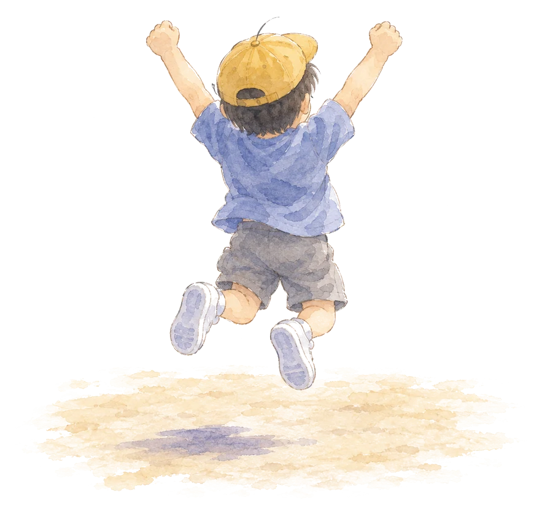

0はじめに 1本の動画から
きっかけは、脳科学者の毛内拡さん（お茶の水女子大学）が出演した動画でした。「そもそも脳は疲れるのか」「脳がショートカットする理由」「グリア細胞とは」「現代人が脳疲労に陥る理由」「スマホの通知がもたらす脳疲労」。章の題を見ただけで、教室で毎日見ている光景と重なりました。
5時間目に机に伏せる子。休み時間のあとのほうが顔つきがよい子。「頭が疲れた」と言う子に、先生は何と答えればよいのか。ここで書きたいのは、動画の内容の要約ではありません。動画で挙がった主張を一つずつ、査読を通った論文と、国の調査という一次資料に当てて確かめた結果です。
先に、大事な断りを2つ書きます。ひとつは、動画本編の文字起こしは取得できなかったので、確かめたのは章の題と副題に書かれた主張であって、毛内さんの発言そのものではないことです。この読み物の中で毛内さんの言葉を引用することはしません。もうひとつは、この読み物の姉妹編「紙とペンで考えると なぜ頭が整うのか」と同じように、調べて書いたのはAIだということです。
調べて意外だった発見が、はじめに一つありました。毛内さんは解説者というだけではなく、2016年に Nature Communications に載った論文の筆頭著者です。マウスの脳に微弱な電流を流すと、グリア細胞の一種であるアストロサイトがカルシウムで応答するという研究でした。グリア細胞の話は、ご本人の専門そのものだったのです。
- 「脳の半分はグリア細胞」は本当か。グリア細胞は何をしているのか
- 脳は本当に疲れるのか。疲れるとしたら、何が起きているのか
- 眠っている間に脳は「掃除」されるのか
- スマホの通知は、脳を疲れさせるのか。通知は切るべきなのか
- 脳を休める方法のうち、根拠があるのはどれか
1脳の半分は「お世話係」
脳の細胞というと、電気信号をやりとりするニューロン（神経細胞）を思い浮かべます。ニューロンではない細胞をまとめてグリア細胞と呼びます。グリアはギリシャ語で「にかわ」、つまり接着剤です。長いあいだ「ニューロンのすき間を埋めているだけの細胞」と思われていたので、この名前がつきました。
まず数の話から。「脳の半分はグリア細胞」は本当でしょうか。2009年、ブラジルの研究チームがヒトの脳を溶かして細胞の核を数えるという方法で、ニューロンは約861億、ニューロン以外の細胞は約846億と報告しました。ほぼ1対1です。動画の「半分」という言い方は、この数字に近い。むしろ、昔よく聞いた「グリア細胞はニューロンの10倍ある」のほうが、根拠のない神話だったことが2016年の総説で明らかにされています。ただし「ニューロン以外」には血管の細胞も含まれるので、正確には「半分弱」です。
では、その半分は何をしているのか。グリア細胞には主に3種類あって、それぞれ違う仕事をしています。教室の言葉で言えば、ニューロンが「考える係」、グリア細胞が「お世話係」です。
アストロサイトは、星の形をした細胞で、シナプス（ニューロンどうしのつなぎ目）のそばに腕を伸ばしています。1999年に「三者間シナプス」という考え方が提案されました。シナプスは送り手と受け手の2者だけでなく、アストロサイトを加えた3者で成り立っているという見方です。アストロサイトは伝達物質の濃さを整え、血管から受け取った栄養をニューロンに届けています。
ミクログリアは、脳の中の免疫細胞です。2011年と2012年のマウスの研究で、発達期のミクログリアが使われていないシナプスを文字どおり「食べて」片づけ、脳の配線を整えていることが示されました。子どもの脳は、つながりを増やすだけでなく、いらないつながりを減らしながら育っています。
オリゴデンドロサイトは、ニューロンの長い突起に髄鞘（ずいしょう）という絶縁の鞘を巻きます。電線に絶縁テープを巻くようなもので、信号が速く正確に伝わるようになります。2014年のマウスの研究では、新しい運動を覚えるときに髄鞘を作る細胞の新生が増え、それを止めると運動を習得できませんでした。
ここで先生に持ち帰ってほしい事実が一つあります。ヒトの脳をMRIで追いかけた研究では、配線の成熟は思春期を過ぎても続き、一部は20代まで変わり続けていました。子どもの脳は、いま配線の片づけと絶縁の最中にある。これは動物実験とヒトの研究の両方から言える、安心して使える事実です。
「脳内炎症」はどこまで言えるか
動画の副題には「情報過多と炎症が脳に悪影響」とありました。ここは慎重に書きます。体のどこかで炎症が起きると、だるさ、意欲の低下、食欲の低下といった「病気のときの行動」が出ることは、免疫と脳の研究で確立しています。風邪をひいたときに何もする気が起きないのは、免疫の信号が脳に届いた結果です。慢性疲労症候群やうつ病の人の脳でミクログリアが活発になっているという報告もあります。ただし、その研究は参加者が9人対10人、20人対20人という小さな規模です。
そして、「情報過多やスマホの通知が脳内炎症を起こす」という橋渡しの部分を直接確かめた論文は、今回の調査では見つかりませんでした。「炎症が疲労を起こす」と「情報が多い」のあいだには、まだ研究で埋まっていない段差があります。この読み物では、そこを仮説として扱います。
2脳は疲れる ただし「タンクが空になる」のではない
「頭を使うと疲れる」は、当たり前のようでいて、長いあいだ科学的にはあやふやな話でした。筋肉なら乳酸がたまる、と説明できます。脳では何がたまるのか。2022年、フランスの研究チームが一つの答えを出しました。
参加者に1日6時間、記憶と注意を使う課題をやらせ、朝・昼・夕方の3回、MRIで脳の中の物質の濃さを測りました。すると、難しい課題を続けた群だけ、夕方に外側前頭前野でグルタミン酸という神経伝達物質の濃さが上がっていました。前頭前野は、計画を立てたり我慢したりするときに働く場所です。そして、疲れた参加者は「いますぐ少ない報酬」を「あとで多い報酬」より選びやすくなっていました。
同じチームの2016年の研究では、丸一日の課題のあとに衝動的な選択が増え、それが前頭前野の活動の低下と結びついていました。疲れると、脳は近道を選ぶ。動画の「脳がショートカットする理由」は、この研究と重なります。人は情報を処理する力に限りがあるので、なるべく近道（ヒューリスティック）を使うという考え方は、心理学では「認知的倹約家」と呼ばれ、カーネマンの「速い思考と遅い思考」でも広く知られています。
もう一つ、意外な事実があります。脳は体重の2％ほどの重さなのに、全身のエネルギーの20％ほどを使います。ところが、課題に取り組んでいるときに増える分は全体の1％程度で、大半は何もしていないように見えるときにも一定して使われています。「考えると急にエネルギーを大量に使う」わけではないのです。脳は、いつも同じくらい忙しい。
疲れの正体については、もう一つ別の説明もあります。「疲れ」とは資源が減った状態ではなく、脳が「この課題はもう続ける価値がない」と計算した結果だという考え方です。子どもが計算ドリルの途中で「疲れた」と言うとき、それは頭のエネルギーが切れたのではなく、「これを続けるより、ほかのことをしたほうがよい」と脳が判断した合図かもしれません。どちらの説明も、「タンクが空になる」という比喩を支持していません。
疲れると、脳は近道を選ぶ6時間の課題のあと、前頭前野にグルタミン酸がたまり、目先の報酬を選びやすくなった（Wiehler ほか 2022、Blain ほか 2016）
3追試で崩れた話 糖・意志力・15分・23分
この読み物でいちばん役に立つのは、たぶんこの章です。「脳の疲れ」について広く信じられている話のうち、大規模な追試で崩れたものを並べます。
「疲れると糖を使い果たす。甘い物で回復する」
2007年に、我慢を続けると血糖値が下がり、糖分の飲み物で自己制御の力が戻るという研究が発表され、有名になりました。しかしその後、5分程度の課題で脳の糖の消費が変わるほどの差は生まれないという再分析が出ました。決定的だったのは2012年の実験です。砂糖水を口に含んで吐き出すだけでも自己制御の成績が上がり、しかも血糖値は変わっていませんでした。効いていたのは糖ではなく、「報酬が来る」という予感だったのです。
「意志力はタンクのように減る」
「自我消耗」と呼ばれる有名な説があります。我慢を一度使うと、そのあとの我慢が効かなくなるという説です。1998年の「チョコレートを我慢してラディッシュを食べた人は、そのあとのパズルを早くあきらめた」という実験が有名です。この説は、2016年に23の研究室・2,141人、2021年に36の研究室・3,531人が、同じ手順で事前登録して追試しました。結果は、効果量がほぼゼロ。合計約60の研究室・5,600人規模で再現しなかった説を、教室で「意志力は使うと減るからね」と語るのは、もうやめてよさそうです。
「集中は15分しか続かない」
教育のコラムでよく見る数字ですが、確立した出典が見つかりませんでした。「アメリカ小児科学会の報告」と書かれていることがありますが、どの文献かを特定できません。大学の講義について「10〜15分で注意が落ちる」という説を検証した2007年の総説は、それを支持する強い根拠はなく、個人差のほうが大きいと結論しています。「15分」という数字を根拠に授業を区切る必要はありません。ただし、休憩そのものに効果があることは別の研究ではっきりしています（7章）。
「中断から戻るのに23分かかる」
「一度中断されると、元の作業に戻るまで23分15秒かかる」という数字も広く出回っています。よく出典とされる2008年の論文を確かめると、この数字は本文のどこにもありませんでした。出どころは2006年の雑誌のインタビューでの発言です。2008年の論文が実際に示したのは「中断されても作業は速く終わる。ただしストレスと焦りは増える」でした。
「ドーパミン断ち」「ドーパミン中毒」
動画の副題には「ドーパミンの活用法」とありました。ドーパミンについて確かなのは、1997年のサルの実験です。ドーパミンを出すニューロンは「報酬そのもの」ではなく「予想とのズレ」に反応します。予想していなかったごほうびには強く反応し、完全に予想できるごほうびには反応せず、予想したごほうびが来ないと活動が落ち込む。「新しさ」「小さな達成」「ごほうびの予感」がやる気を動かす土台は、ここにあります。一方で「ドーパミン断ち」という言葉は誤解です。ドーパミンは断てる物質ではなく、安静時にも脳は作り続けています。「刺激の少ない時間を意図して作る」という行動には意味がありますが、仕組みの説明として「断つ」は正しくありません。
「蛙化現象も脳疲労」
蛙化現象（好きな人に好かれた途端に気持ちが冷める）は、2004年の学会発表を初出に、心理学の研究対象になっています。けれど、それを脳の疲れと結びつけた論文は見つかりませんでした。動画も疑問形で提示しています。根拠なし、として扱います。
この章の持ち帰り 教室で言わなくてよくなった言葉
- 「頭を使うと糖が減るから、甘い物を食べなさい」
- 「我慢すると意志力が減るから、大事なことは先に」
- 「集中は15分しかもたないから、15分で区切る」
- 「一度気がそれると、戻るのに23分かかる」
- 「ドーパミンを断てば脳がリセットされる」
4眠っている間の脳 マウスで分かったこと、人ではまだのこと

「寝ている間に脳の老廃物が洗い流される」という話を聞いたことがあると思います。これはグリア細胞と深く関わる、この10年でいちばん注目された研究の一つです。そして、いちばん慎重に書くべき話でもあります。
2012年、脳脊髄液（脳を浸している液体）が血管に沿って脳の奥まで入り込み、老廃物を運び出す経路が見つかりました。この流れにはアストロサイトの水の通り道（アクアポリン4）が要ります。グリアとリンパをかけて「グリンパティック系」と名づけられました。2013年の Science の論文は、マウスが眠ると脳の細胞と細胞のすき間が60％広がり、アルツハイマー病に関わるアミロイドβの除去が、起きているときの約2倍の速さになったと報告しました。
2025年には、さらに詳しい仕組みが分かりました。ノンレム睡眠中、ノルアドレナリンというホルモンのゆっくりした波が血管を縮めたり広げたりして、ポンプのように脳脊髄液を送っている。そして、睡眠薬（ゾルピデム）でこの波が半分に減り、脳への液の流入が3割以上減りました。薬で眠っても、同じ掃除は起きないかもしれない、という結果です。
ここまではマウスの話です。ヒトではどうか。2019年に、眠っている人の脳をMRIで撮り、脳波の深い波に合わせて脳脊髄液が波のように出入りする様子が観察されました。ただしこの研究は「液が動いている」ことを示したのであって、「老廃物がどれだけ減ったか」は測っていません。
そして2024年、「眠っているときや麻酔中は、脳から物が出ていく速さがむしろ遅い」という真っ向からの反論が Nature Neuroscience に載りました。提唱者側は2025年に「方法に問題がある」と再反論し、反論側がさらに反論しています。決着はついていません。
ヒトで言えること 睡眠と記憶、睡眠と感情
一方で、睡眠と学習についてはヒトの研究がそろっています。一晩徹夜した人は、翌日に新しい映像を覚えるときの海馬の働きが落ち、覚える力が4割下がっていました。深い眠り（徐波睡眠）のあいだに、その日に習ったことが海馬から大脳皮質に移され、記憶として定着していく。これは多くの研究を整理した総説で大枠の合意になっています。「テストの前日に徹夜で詰め込む」より「早く寝て今日覚えたことを定着させる」ほうがよい、と子どもに言える根拠です。
感情についても分かっています。徹夜した人は、嫌な写真を見たときの扁桃体（感情の中枢）の反応が、よく眠った人より6割強く出ていました。寝不足の子が友達のひと言でかっとなるのは、性格の問題である前に、脳の状態の問題かもしれません。「今日はよく眠れた？」と聞く材料になります。
子どもの睡眠の目安
米国睡眠医学会と、厚生労働省の「健康づくりのための睡眠ガイド2023」は一致して、小学生は9〜12時間、中高生は8〜10時間を目安としています。日本の小学生4,269人の調査では、平均の就寝は21時30分、睡眠時間は9時間4分。学年が上がるほど短くなります。0〜3歳の国際比較では、日本の子どもは17の国と地域の中でもっとも睡眠が短い側でした。
短い昼寝については、10分がもっとも効率がよく、30分眠ると起きたあとのぼんやりが35〜95分続くという実験があります。「NASAの26分仮眠で作業成績が34％改善」という有名な数字は、夜通し飛ぶパイロットの疲労対策としての数字です。健康な子どもの日常には、そのまま当てはめません。
5スマホと通知 切るより、まとめる

動画の副題は「スマホの通知は今すぐ切るべし」でした。通知が注意をそらすことは、実験で確かめられています。2015年の実験では、携帯電話を操作しなくても、通知の音や振動が来るだけで注意課題の誤りが増えました。2016年の実験では、通知をオンにして手元に置いた週は、通知を切って離れた場所に置いた週より、不注意や落ち着きのなさの自己報告が増えていました。ここまでは動画のとおりです。
ただし「今すぐ切る」が最善かというと、少し違いました。2019年のランダム化比較試験（237人）では、通知を完全に切った群より、1日3回、決まった時間にまとめて届ける群のほうが幸福感の改善が大きかったのです。完全に切ると「何か来ているかもしれない」という取り残される不安が増え、かえって落ち着きませんでした。読み物としては「全部切る」ではなく「まとめる。決まった時間だけ見る」を勧めるのが、根拠に忠実です。
姉妹編の判断を、今回も守る
姉妹編「紙とペンで考える」で、「スマホが机の上にあるだけで認知の容量が減る」という2017年の有名な研究は、直接の追試2本が再現しなかったので発信には使わない、と決めました。今回も同じです。メタ分析では小さな効果が残るという留保はつきますが、断定的には書きません。
「スマホが子どもの発達や学力に悪い」という主張の多くは相関研究で、効果の大きさは小さいものが多い。2019年の大規模な分析では、デジタル機器の利用が子どもの幸福感を説明する割合は0.4％で、これは「じゃがいもを食べる量」と同じ程度でした。2024年に話題になった『不安な世代』（ハイト）の「スマホが子どもの脳を配線し直している」という強い主張には、発達心理学者から「相関を因果に読み替えている」という批判が Nature に載っています。専門家の意見は分かれています。
学校でのスマホ禁止の効果も、研究によって割れています。禁止後に成績が上がったという準実験がある一方、2025年の英国30校の研究では、制限が厳しい学校と緩い学校で、成績も睡眠も気分も差がありませんでした。「禁止すれば解決する」とは書けません。
効いた介入と、効かなかった道具
効いたのは、スマホのモバイル通信を2週間止める（467人、注意の持続が改善）、SNSを1日30分に制限する、の2つです。「ほどほど」の利用がいちばん幸福感が高く、ゼロも過剰も低いという大規模調査もあります。目指すのは「ゼロ」ではなく「ほどよい量」です。
就寝前の画面については、発光する端末で寝る前に読書するとメラトニン（眠りのホルモン）が抑えられ、寝つきが遅くなる実験（12人）と、寝室にメディア機器があるだけで睡眠が短いというメタ分析があります。ここまでは根拠がある。一方、ブルーライトカット眼鏡は、2023年のコクランレビューで睡眠の質を改善しないと結論されました。効くのは眼鏡ではなく、時間帯と置き場所です。
6数字で見る日本の子ども 令和8年度の全国学力・学習状況調査
海外の研究だけでは、教室の実感と距離があります。国の一次資料を見ます。令和8年度（2026年4月実施）の全国学力・学習状況調査の児童質問調査には、こういう質問があります。「普段（月〜金）、1日当たりどれくらいの時間、スマートフォンや携帯電話、パソコン、タブレット、ゲーム機、テレビ等でSNSや動画視聴などをしますか（学習する時間やゲームをする時間は除く）」。小学6年生の答えと、教科の平均正答率を並べたのが次の表です。
| 平日1日の時間 | 小6の割合 | 国語の平均正答率 | 算数の平均正答率 |
|---|---|---|---|
| 4時間以上 | 21.7％ | 52.9 | 47.7 |
| 3時間以上4時間未満 | 15.6％ | 58.1 | 52.7 |
| 2時間以上3時間未満 | 19.9％ | 62.0 | 57.3 |
| 1時間以上2時間未満 | 20.9％ | 65.2 | 61.0 |
| 30分以上1時間未満 | 11.1％ | 67.5 | 63.7 |
| 30分未満 | 5.8％ | 70.7 | 68.6 |
| 持っていない | 4.5％ | 64.1 | 60.7 |
出典：国立教育政策研究所「令和8年度 全国学力・学習状況調査 報告書（質問調査）」概要 p.76。相関係数は「持っていない」を除いて算出し、国語 −0.240、算数 −0.252。
3時間以上の子が合わせて37.3％。時間が長い子ほど正答率が低い階段が、きれいにできています。ただし、ここで3つ注意があります。
第一に、これは相関です。国立教育政策研究所は毎年「相関関係がみられるかを分析したものであり、因果関係を示したものではない」と注記しています。長く見る子の家庭の状況や学習時間が一緒に動いている可能性があります。第二に、「持っていない」子は「30分未満」の子より低い。片側の階段だけ見せて「持たせなければよい」とは読めません。5章の「ほどよい量」と同じ形です。第三に、令和8年度から質問の機器の範囲が広がった（パソコン、タブレット、ゲーム機、テレビを含む）ので、前の年度と単純に並べられません。
参考までに、ゲームの時間を聞く項目は令和6年度が最後でした。「平日に4時間以上ゲームをする」小6は、平成26年度の8.8％から令和6年度の17.5％へ、10年で約2倍になっています。この項目は質問文が同じなので、比べられます。
睡眠については、「毎日、同じくらいの時刻に寝ている」と答えた小6は40.5％、「同じくらいの時刻に起きている」は56.0％です。10年間ほぼ横ばい。寝る時刻がそろっている子は4割で、起きる時刻のほうがそろえやすい、という形が見えます。
学校側の質問には、こういう項目もありました。「近視の予防の一環として、休み時間に屋外に出ることや、対象から30cm以上目を離す、30分に1回は目を休めるなどの配慮事項について指導していますか」。小学校の57.8％が「指導している」と答えています。「30分に1回、目を休める」は、すでに6割の小学校が口にしている言葉です。
7休み方の研究 効いたもの、効かなかったもの

では、脳はどう休めればよいのか。「これが効く」という話は世の中にあふれています。根拠の強さで三段に分けます。
強い 短い休憩と、軽い運動
いちばん強い根拠は、デンマークの約200万件の全国テストのデータです。テストを受ける時刻が1時間遅いごとに成績が標準偏差の0.9％下がり、テストの直前に20〜30分の休み時間があると1.7％上がりました。この効果は、成績が低い子で大きかった。時間割という、学校が動かせる要因が学力テストに効くことを示した研究です。
授業の中では、単調な課題の途中に数十秒の気晴らしを挟むと、そのあとの注意が保たれるという実験があります。20分歩いた直後は、座って過ごしたあとより読解テストの成績が上がった（9〜10歳の20人）。授業中に体を動かす短い休憩を取り入れた学級を集めたメタ分析では、学力への効果量が1.03、課題への集中が0.60と、中から大の効果でした。米国の疾病対策センター（CDC）は小学校で1日20分以上の休み時間を勧め、罰として休み時間を取り上げないよう明記しています。
「ぼんやり」も、この段に入れます。何もしていないときに働く脳の回路（デフォルトモードネットワーク）は、記憶の整理や自分の振り返りを担っています。「休息は怠けではない」という2012年の総説の題が、この分野の結論です。簡単な作業をしながら心がさまよう時間は、そのあとの発想を助けました。ただし「何もせずじっと座って考える」ことは大人にも苦痛で、6〜15分それをさせる実験では、退屈に耐えかねて自分に電気ショックを与える人がいました。「ぼんやりさせる」のではなく、手を軽く動かせる自由な時間を残す、が正しい形です。
条件つき 自然、呼吸
「緑を見ると注意が回復する」という説（注意回復理論）には、公園を歩いたあとに作業記憶の課題が改善した（38人）、自然の中を90分歩くと反すうが減った、窓の外に緑がある教室のほうが注意が回復した（高校生94人）といった肯定的な研究があります。ただしメタ分析では、課題によって効果がばらつくという慎重な結論です。効くと断言はできませんが、害はない。休み時間に外に出る理由としては十分です。
呼吸法は、大人108人の試験で、1日5分の「長く吐く呼吸」が28日で気分をもっとも改善しました。子どもでの検証はまだです。
効かなかった側 マインドフルネス授業、20-20-20
ここは正直に書きます。子ども向けのマインドフルネスは、33本のランダム化比較試験を集めたメタ分析では、注意や不安に小から中程度の効果がありました。ところが、英国の85校・8,376人という最大級の試験（MYRIAD）で、教員が教える10コマのマインドフルネス授業は、抑うつ・幸福感のいずれにも通常授業との差がありませんでした。小さな研究の積み上げでは効きそうに見えたものが、規模を上げると消えた。「マインドフルネスをやれば落ち着く」という期待は、いまの根拠では持てません。
目の休め方の「20分ごとに20秒、20フィート先を見る」という20-20-20ルールも、2週間のランダム化比較試験で、視力や調節機能に差が出ませんでした。数字そのものに根拠はありません。ただし「画面を見続けない」という考え方に害はなく、目安として使うのはかまいません。
音楽については、曲と曲のあいだに挟んだ2分間の沈黙のときに、心拍と呼吸がもっとも落ち着いたという実験があります。歌詞つきの音楽を聴きながらの読解は、好きな曲でも無音より成績が下がりました。にぎやかな時間のあとに短い静かな時間を置く、くらいの使い方が妥当です。
学習指導要領との接続
休養は、小学校の保健で3・4年「体の発育・発達」に「適切な運動、食事、休養及び睡眠が必要である」と明記され、運動・食事・睡眠と並ぶ4本柱の一つです。5・6年「心の健康」では不安や悩みへの対処を扱い、体育の「体ほぐしの運動」は全学年で「心と体を軽やかにしたりストレスを軽減したりする」活動として位置づけられています。この読み物の内容は、新しい単元を作らなくても、いまある保健と体育に入ります。
8教室へ 明日からできる5つ
7章の根拠を、学校の1日に置き直します。新しい道具はいりません。
明日からできる5つ
- テストの直前に20分の休み時間を置く。単元テストや学力調査を、休み時間の直後のコマに組む。詰め込みの5分より、休みの20分（Sievertsen 2016）
- 一斉指導が10分を超えたら、形を変える。1〜2分の体ほぐし、隣と話す、短い作業。「15分」の数字にはこだわらない（Ariga & Lleras 2011、Godwin 2016）
- 休み時間を罰として取り上げない。外に出て体を動かす20分は、次の授業への投資（CDC 2017、Hillman 2009）
- 「30分に1回、目を休める」を、そのまま使う。すでに6割の小学校が指導している言葉。遠くの緑を見る、でよい（令和8年度学校質問、Li & Sullivan 2016）
- 家庭には3つだけ伝える。通知はまとめる。寝室にスマホを置かない。ルールは話し合って決める。禁止や取り上げは勧めない（Fitz 2019、Carter 2016、学テ保護者調査）
そして、子どもに「疲れた」と言われたときの答え方が、少し変わります。「気合いが足りない」でも「糖分をとりなさい」でもありません。「頭を使うと、前のほうの脳に疲れのもとがたまる。休むと戻る」。それは研究が確かめた、本当の話です。
9まとめ
- 脳の半分はグリア細胞か。ほぼそのとおり（1対1）。「10倍」のほうが神話だった。グリア細胞はシナプスの調整、栄養の受け渡し、いらないシナプスの片づけ、配線の絶縁をしている。子どもの脳では、片づけと絶縁が20代まで続く
- 脳は疲れるか。疲れる。6時間の課題で前頭前野にグルタミン酸がたまり、判断が近視眼的になる。ただし「糖が減る」「意志力のタンクが空になる」は追試で崩れた
- 眠っている間に脳は掃除されるか。マウスでは繰り返し確かめられている。ヒトでは液の動きまでしか観察されておらず、2024年に反論も出て論争中。睡眠と記憶・感情の関係は、ヒトで言える
- 通知は切るべきか。通知が注意をそらすのは確か。ただし完全に切るより「まとめる」ほうが根拠が厚い。「スマホがあるだけで頭が働かない」は使わない。効くのは眼鏡ではなく、時間帯と置き場所
- 根拠のある休み方は。短い休憩と軽い運動がいちばん強い。自然と呼吸は条件つき。学校でのマインドフルネス授業と20-20-20は、大規模な検証で効果が出なかった
疲れの正体は、タンクの空ではなく、前頭前野にたまった疲れのもと。休むと戻る論文130本あまりを読んで残った、子どもに言える一文です
この読み物は、1本の動画から始まりました。動画の骨になる主張の多くは一次資料で支持され、「通知は今すぐ切れ」「脳の掃除」「炎症」の部分は言い過ぎでした。そのことを正直に書けたのが、この読み物の価値だと思っています。
この読み物は AI（Claude Code、Fable 5.1）の出力です。文献の調査と執筆はAIが行い、外﨑はきっかけの動画を見て調査を頼み、公開を判断しました。 外﨑自身は一次資料を読んでいません。論文の要約は、AIが抄録と本文で確認できた範囲で書き、人数や効果量が確認できなかったものは数字を書いていません。 追試で再現しなかった研究、反論が出ている研究は、そのことを本文に明記しました。動画本編の発言は確認できていないため、この読み物で検証したのは章立てと副題に書かれた主張です。 研究の読み違いがあれば、noteやXでお知らせください。2026年9月18日。
参考にした研究
著者・年・題名・掲載誌は、DOI、PubMed、J-STAGE、CiNii、官公庁の公開ページで確認したものだけを載せています。リンクはDOIか論文ページ、または公開PDFです。きっかけの動画は、PIVOT HEALTH「【脳科学が明かす、脳疲労の正体】」（毛内拡さん出演、YouTube）。
- Azevedo, F. A. C., et al. (2009). Equal numbers of neuronal and nonneuronal cells make the human brain an isometrically scaled-up primate brain. Journal of Comparative Neurology, 513(5), 532–541. DOI
- von Bartheld, C. S., Bahney, J., & Herculano-Houzel, S. (2016). The search for true numbers of neurons and glial cells in the human brain. Journal of Comparative Neurology, 524(18), 3865–3895. DOI
- Araque, A., Parpura, V., Sanzgiri, R. P., & Haydon, P. G. (1999). Tripartite synapses: glia, the unacknowledged partner. Trends in Neurosciences, 22(5), 208–215. DOI
- Pellerin, L., & Magistretti, P. J. (1994). Glutamate uptake into astrocytes stimulates aerobic glycolysis. PNAS, 91(22), 10625–10629. DOI
- Paolicelli, R. C., et al. (2011). Synaptic pruning by microglia is necessary for normal brain development. Science, 333(6048), 1456–1458. DOI
- Schafer, D. P., et al. (2012). Microglia sculpt postnatal neural circuits in an activity and complement-dependent manner. Neuron, 74(4), 691–705. DOI
- McKenzie, I. A., et al. (2014). Motor skill learning requires active central myelination. Science, 346(6207), 318–322. DOI
- Bojarskaite, L., et al. (2020). Astrocytic Ca2+ signaling is reduced during sleep and is involved in the regulation of slow wave sleep. Nature Communications, 11, 3240. DOI
- Lebel, C., & Beaulieu, C. (2011). Longitudinal development of human brain wiring continues from childhood into adulthood. Journal of Neuroscience, 31(30), 10937–10947. DOI
- Monai, H., et al. (2016). Calcium imaging reveals glial involvement in transcranial direct current stimulation-induced plasticity in mouse brain. Nature Communications, 7, 11100. DOI
- Dantzer, R., O'Connor, J. C., Freund, G. G., Johnson, R. W., & Kelley, K. W. (2008). From inflammation to sickness and depression. Nature Reviews Neuroscience, 9(1), 46–56. DOI
- Nakatomi, Y., et al. (2014). Neuroinflammation in patients with chronic fatigue syndrome/myalgic encephalomyelitis: An 11C-(R)-PK11195 PET study. Journal of Nuclear Medicine, 55(6), 945–950. DOI
- Setiawan, E., et al. (2015). Role of translocator protein density, a marker of neuroinflammation, in the brain during major depressive episodes. JAMA Psychiatry, 72(3), 268–275. DOI
- Wiehler, A., Branzoli, F., Adanyeguh, I., Mochel, F., & Pessiglione, M. (2022). A neuro-metabolic account of why daylong cognitive work alters the control of economic decisions. Current Biology, 32(16), 3564–3575. PubMed
- Blain, B., Hollard, G., & Pessiglione, M. (2016). Neural mechanisms underlying the impact of daylong cognitive work on economic decisions. PNAS, 113(25), 6967–6972. DOI
- Boksem, M. A. S., & Tops, M. (2008). Mental fatigue: Costs and benefits. Brain Research Reviews, 59(1), 125–139. DOI
- Hockey, G. R. J. (1997). Compensatory control in the regulation of human performance under stress and high workload. Biological Psychology, 45(1–3), 73–93. DOI
- Kurzban, R., Duckworth, A., Kable, J. W., & Myers, J. (2013). An opportunity cost model of subjective effort and task performance. Behavioral and Brain Sciences, 36(6), 661–679. DOI
- Raichle, M. E., & Gusnard, D. A. (2002). Appraising the brain's energy budget. PNAS, 99(16), 10237–10239. 論文ページ
- Raichle, M. E. (2006). The brain's dark energy. Science, 314(5803), 1249–1250. DOI
- Gailliot, M. T., et al. (2007). Self-control relies on glucose as a limited energy source. Journal of Personality and Social Psychology, 92(2), 325–336. PubMed
- Kurzban, R. (2010). Does the brain consume additional glucose during self-control tasks? Evolutionary Psychology, 8(2), 244–259. DOI
- Molden, D. C., et al. (2012). Motivational versus metabolic effects of carbohydrates on self-control. Psychological Science, 23(10), 1137–1144. PubMed
- Baumeister, R. F., Bratslavsky, E., Muraven, M., & Tice, D. M. (1998). Ego depletion: Is the active self a limited resource? Journal of Personality and Social Psychology, 74(5), 1252–1265. PubMed
- Hagger, M. S., et al. (2016). A multilab preregistered replication of the ego-depletion effect. Perspectives on Psychological Science, 11(4), 546–573. PubMed
- Vohs, K. D., et al. (2021). A multisite preregistered paradigmatic test of the ego-depletion effect. Psychological Science, 32(10), 1566–1581. PubMed
- Cowan, N. (2001). The magical number 4 in short-term memory. Behavioral and Brain Sciences, 24(1), 87–114. PubMed
- Rubinstein, J. S., Meyer, D. E., & Evans, J. E. (2001). Executive control of cognitive processes in task switching. Journal of Experimental Psychology: Human Perception and Performance, 27(4), 763–797. PubMed
- Monsell, S. (2003). Task switching. Trends in Cognitive Sciences, 7(3), 134–140. DOI
- Ophir, E., Nass, C., & Wagner, A. D. (2009). Cognitive control in media multitaskers. PNAS, 106(37), 15583–15587. PubMed
- Uncapher, M. R., & Wagner, A. D. (2018). Minds and brains of media multitaskers: Current findings and future directions. PNAS, 115(40), 9889–9896. PubMed
- Danziger, S., Levav, J., & Avnaim-Pesso, L. (2011). Extraneous factors in judicial decisions. PNAS, 108(17), 6889–6892. PubMed
- Weinshall-Margel, K., & Shapard, J. (2011). Overlooked factors in the analysis of parole decisions. PNAS, 108(42), E833. PubMed
- Schultz, W., Dayan, P., & Montague, P. R. (1997). A neural substrate of prediction and reward. Science, 275(5306), 1593–1599. PubMed
- Fei, S., et al. (2022). Maladaptive or misunderstood? Dopamine fasting as a potential intervention for behavioral addiction. Lifestyle Medicine, 3(2), e54. DOI
- Wilson, K., & Korn, J. H. (2007). Attention during lectures: Beyond ten minutes. Teaching of Psychology, 34(2), 85–89. DOI
- Mark, G., Gudith, D., & Klocke, U. (2008). The cost of interrupted work: More speed and stress. CHI 2008. PDF
- 藤澤伸介（2004）女子が恋愛過程で遭遇する蛙化現象．日本心理学会第68回大会発表論文集，1095．J-GLOBAL
- 喜入暁・押尾恵吾・谷口あや・松本昇（2023）蛙化現象傾向を測定する（1）．日本心理学会第89回大会発表論文集，89_217．J-STAGE
- 渡辺恭良（2007）疲労の分子神経メカニズムと疲労克服．日本薬理学雑誌，129(2)，94–98．J-STAGE
- 倉恒弘彦．筋痛性脳脊髄炎／慢性疲労症候群（ME/CFS）―最近の知見―．神経治療学，38(3)，164–．J-STAGE
- Iliff, J. J., et al. (2012). A paravascular pathway facilitates CSF flow through the brain parenchyma and the clearance of interstitial solutes, including amyloid β. Science Translational Medicine, 4(147), 147ra111. DOI
- Xie, L., et al. (2013). Sleep drives metabolite clearance from the adult brain. Science, 342(6156), 373–377. PMC
- Mestre, H., et al. (2018). Aquaporin-4-dependent glymphatic solute transport in the rodent brain. eLife, 7, e40070. 論文ページ
- Fultz, N. E., et al. (2019). Coupled electrophysiological, hemodynamic, and cerebrospinal fluid oscillations in human sleep. Science, 366(6465), 628–631. DOI
- Hauglund, N. L., et al. (2025). Norepinephrine-mediated slow vasomotion drives glymphatic clearance during sleep. Cell, 188(3), 606–622. DOI
- Miao, A., et al. (2024). Brain clearance is reduced during sleep and anesthesia. Nature Neuroscience, 27, 1046–1050. 論文ページ
- Plá, V., et al. (2025). A curious concept of CNS clearance. Nature Neuroscience, 28, 731–733. 論文ページ
- Franks, N. P., & Wisden, W. (2025). Reply to: A curious concept of CNS clearance. Nature Neuroscience, 28, 734–736. 論文ページ
- Yoo, S.-S., Hu, P. T., Gujar, N., Jolesz, F. A., & Walker, M. P. (2007). A deficit in the ability to form new human memories without sleep. Nature Neuroscience, 10(3), 385–392. PDF
- Yoo, S.-S., Gujar, N., Hu, P., Jolesz, F. A., & Walker, M. P. (2007). The human emotional brain without sleep. Current Biology, 17(20), R877–R878. DOI
- Rasch, B., & Born, J. (2013). About sleep's role in memory. Physiological Reviews, 93(2), 681–766. PMC
- Kurdziel, L., Duclos, K., & Spencer, R. M. C. (2013). Sleep spindles in midday naps enhance learning in preschool children. PNAS, 110(43), 17267–17272. 論文ページ
- Astill, R. G., et al. (2012). Sleep, cognition, and behavioral problems in school-age children: A century of research meta-analyzed. Psychological Bulletin, 138(6), 1109–1138. PubMed
- Paruthi, S., et al. (2016). Recommended amount of sleep for pediatric populations: A consensus statement of the American Academy of Sleep Medicine. Journal of Clinical Sleep Medicine, 12(6), 785–786. 論文ページ
- Mindell, J. A., et al. (2010). Cross-cultural differences in infant and toddler sleep. Sleep Medicine, 11(3), 274–280. DOI
- 村田絵美ほか（2014）日本の小学生の睡眠習慣と睡眠に影響を及ぼすライフスタイルについての大規模調査．小児保健研究，73(6)，798–810．CiNii
- Mednick, S., Nakayama, K., & Stickgold, R. (2003). Sleep-dependent learning: a nap is as good as a night. Nature Neuroscience, 6, 697–698. 論文ページ
- Rosekind, M. R., et al. (1995). Alertness management: strategic naps in operational settings. Journal of Sleep Research, 4(s2), 62–66. DOI
- Brooks, A., & Lack, L. (2006). A brief afternoon nap following nocturnal sleep restriction: Which nap duration is most recuperative? Sleep, 29(6), 831–840. DOI
- 厚生労働省（2024）健康づくりのための睡眠ガイド2023．厚生労働省
- Stothart, C., Mitchum, A., & Yehnert, C. (2015). The attentional cost of receiving a cell phone notification. Journal of Experimental Psychology: Human Perception and Performance, 41(4), 893–897. PubMed
- Kushlev, K., Proulx, J., & Dunn, E. W. (2016). "Silence your phones": Smartphone notifications increase inattention and hyperactivity symptoms. CHI 2016, 1011–1020. ACM
- Fitz, N., Kushlev, K., Jagannathan, R., Lewis, T., Paliwal, D., & Ariely, D. (2019). Batching smartphone notifications can improve well-being. Computers in Human Behavior, 101, 84–94. DOI
- Ward, A. F., Duke, K., Gneezy, A., & Bos, M. W. (2017). Brain drain: The mere presence of one's own smartphone reduces available cognitive capacity. Journal of the Association for Consumer Research, 2(2), 140–154. DOI
- Ruiz Pardo, A. C., & Minda, J. P. (2022). Reexamining the "brain drain" effect. Consciousness and Cognition. PubMed
- Böttger, T., Poschik, M., & Zierer, K. (2023). Does the brain drain effect really exist? A meta-analysis. Behavioral Sciences, 13(9), 751. PMC
- Madigan, S., et al. (2019). Association between screen time and children's performance on a developmental screening test. JAMA Pediatrics, 173(3), 244–250. PubMed
- Orben, A., & Przybylski, A. K. (2019). The association between adolescent well-being and digital technology use. Nature Human Behaviour, 3, 173–182. 論文ページ
- Odgers, C. L. (2024). The great rewiring: is social media really behind an epidemic of teenage mental illness? Nature, 628, 29–30. 論文ページ
- Chang, A.-M., Aeschbach, D., Duffy, J. F., & Czeisler, C. A. (2015). Evening use of light-emitting eReaders negatively affects sleep, circadian timing, and next-morning alertness. PNAS, 112(4), 1232–1237. 論文ページ
- Hale, L., & Guan, S. (2015). Screen time and sleep among school-aged children and adolescents: A systematic literature review. Sleep Medicine Reviews, 21, 50–58. DOI
- Carter, B., Rees, P., Hale, L., Bhattacharjee, D., & Paradkar, M. S. (2016). Association between portable screen-based media device access or use and sleep outcomes. JAMA Pediatrics, 170(12), 1202–1208. DOI
- Singh, S., Keller, P. R., Busija, L., et al. (2023). Blue-light filtering spectacle lenses for visual performance, sleep, and macular health in adults. Cochrane Database of Systematic Reviews, 8, CD013244. DOI
- Castelo, N., Kushlev, K., et al. (2025). Blocking mobile internet on smartphones improves sustained attention, mental health, and subjective well-being. PNAS Nexus, 4(2). PMC
- Hunt, M. G., Marx, R., Lipson, C., & Young, J. (2018). No more FOMO: Limiting social media decreases loneliness and depression. Journal of Social and Clinical Psychology, 37(10), 751–768. 論文ページ
- Przybylski, A. K., & Weinstein, N. (2017). A large-scale test of the Goldilocks hypothesis. Psychological Science, 28(2), 204–215. 論文ページ
- Beland, L.-P., & Murphy, R. (2016). Ill communication: Technology, distraction & student performance. Labour Economics, 41, 61–76. 論文ページ
- Goodyear, V. A., et al. (2025). School phone policies and their association with mental wellbeing, phone use, and social media use (SMART Schools). Lancet Regional Health Europe. PubMed
- Nguyen, T. T., et al. (2025). Short-form video use and attention: a meta-analysis. PubMed
- Clark, L., & Zack, M. (2023). Engineered highs: Reward variability and frequency as potential prerequisites of behavioural addiction. Addictive Behaviors, 140, 107626. PubMed
- 文部科学省．ICT端末の利用に当たっての健康への配慮（リーフレット）．文部科学省
- 国立教育政策研究所（2026）令和8年度 全国学力・学習状況調査 報告書 質問調査（質問の経年変化・質問と学力のクロス分析）．国立教育政策研究所
- 国立教育政策研究所（2024）令和6年度 全国学力・学習状況調査 報告書 質問調査．PDF
- 文部科学省（2025）令和6年度 全国学力・学習状況調査 経年変化分析調査・保護者に対する調査 結果．PDF
- こども家庭庁（2025）令和6年度 青少年のインターネット利用環境実態調査．PDF
- Sievertsen, H. H., Gino, F., & Piovesan, M. (2016). Cognitive fatigue influences students' performance on standardized tests. PNAS, 113(10), 2621–2624. PubMed
- Ariga, A., & Lleras, A. (2011). Brief and rare mental "breaks" keep you focused. Cognition, 118(3), 439–443. DOI
- Pellegrini, A. D., & Bohn, C. M. (2005). The role of recess in children's cognitive performance and school adjustment. Educational Researcher, 34(1), 13–19. DOI
- CDC & SHAPE America (2017). Strategies for Recess in Schools. CDC
- Godwin, K. E., et al. (2016). Off-task behavior in elementary school children. Learning and Instruction, 44, 128–143. DOI
- Hillman, C. H., et al. (2009). The effect of acute treadmill walking on cognitive control and academic achievement in preadolescent children. Neuroscience, 159(3), 1044–1054. DOI
- Erickson, K. I., et al. (2011). Exercise training increases size of hippocampus and improves memory. PNAS, 108(7), 3017–3022. DOI
- Watson, A., Timperio, A., Brown, H., Best, K., & Hesketh, K. D. (2017). Effect of classroom-based physical activity interventions on academic and physical activity outcomes. International Journal of Behavioral Nutrition and Physical Activity, 14, 114. DOI
- Masini, A., et al. (2020). Evaluation of school-based interventions of active breaks in primary schools. Journal of Science and Medicine in Sport, 23(4), 377–384. DOI
- Raichle, M. E., et al. (2001). A default mode of brain function. PNAS, 98(2), 676–682. DOI
- Immordino-Yang, M. H., Christodoulou, J. A., & Singh, V. (2012). Rest is not idleness. Perspectives on Psychological Science, 7(4), 352–364. DOI
- Baird, B., et al. (2012). Inspired by distraction: Mind wandering facilitates creative incubation. Psychological Science, 23(10), 1117–1122. DOI
- Killingsworth, M. A., & Gilbert, D. T. (2010). A wandering mind is an unhappy mind. Science, 330(6006), 932. DOI
- Wilson, T. D., et al. (2014). Just think: The challenges of the disengaged mind. Science, 345(6192), 75–77. DOI
- Mann, S., & Cadman, R. (2014). Does being bored make us more creative? Creativity Research Journal, 26(2), 165–173. DOI
- Barker, J. E., et al. (2014). Less-structured time in children's daily lives predicts self-directed executive functioning. Frontiers in Psychology, 5, 593. DOI
- Kaplan, S. (1995). The restorative benefits of nature: Toward an integrative framework. Journal of Environmental Psychology, 15(3), 169–182. DOI
- Berman, M. G., Jonides, J., & Kaplan, S. (2008). The cognitive benefits of interacting with nature. Psychological Science, 19(12), 1207–1212. PubMed
- Bratman, G. N., et al. (2015). Nature experience reduces rumination and subgenual prefrontal cortex activation. PNAS, 112(28), 8567–8572. PubMed
- Li, D., & Sullivan, W. C. (2016). Impact of views to school landscapes on recovery from stress and mental fatigue. Landscape and Urban Planning, 148, 149–158. DOI
- Ohly, H., et al. (2016). Attention Restoration Theory: A systematic review. Journal of Toxicology and Environmental Health, Part B, 19(7–8), 305–343. 論文ページ
- Stevenson, M. P., Schilhab, T., & Bentsen, P. (2018). Attention Restoration Theory II: A systematic review to clarify attention processes affected by exposure to natural environments. Journal of Toxicology and Environmental Health, Part B, 21(4), 227–268. PubMed
- Balban, M. Y., et al. (2023). Brief structured respiration practices enhance mood and reduce physiological arousal. Cell Reports Medicine, 4(1), 100895. DOI
- Dunning, D. L., et al. (2019). The effects of mindfulness-based interventions on cognition and mental health in children and adolescents. Journal of Child Psychology and Psychiatry, 60(3), 244–258. DOI
- Kuyken, W., et al. (2022). Effectiveness and cost-effectiveness of universal school-based mindfulness training (MYRIAD). Evidence Based Mental Health, 25(3), 99–109. DOI
- Johnson, S., & Rosenfield, M. (2023). 20-20-20 rule: Are these numbers justified? Optometry and Vision Science, 100(1), 59–65. DOI
- Bernardi, L., Porta, C., & Sleight, P. (2006). Cardiovascular, cerebrovascular, and respiratory changes induced by different types of music. Heart, 92(4), 445–452. PubMed
- Perham, N., & Currie, H. (2014). Does listening to preferred music improve reading comprehension performance? Applied Cognitive Psychology, 28(2), 279–284. DOI
- 文部科学省（2017）小学校学習指導要領（平成29年告示）解説 体育編．